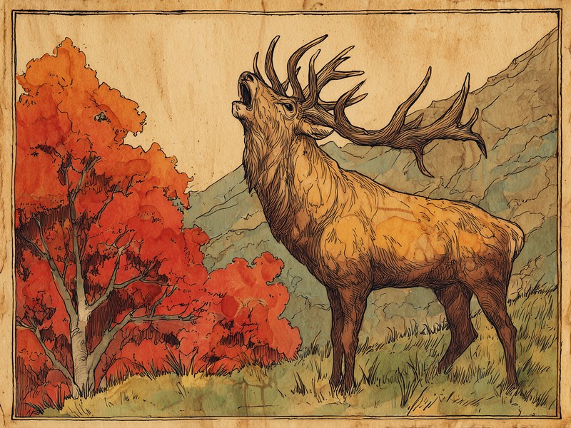
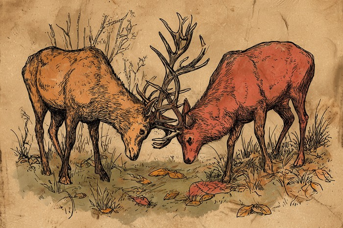

エゾシカは猫とは正反対に、日が短くなる秋(9〜11月ごろ)に発情期を迎える「短日繁殖動物」です。日照時間の変化を体内で感知し、恋の季節のスイッチを入れています。 When the days grow shorter, the deer grow louder.
エゾシカは猫と真逆の「短日繁殖動物」。日が短くなる秋(9〜11月、ピークは10月)に発情期を迎え、約210〜230日の妊娠期間を経て初夏の出産に合わせています。
🔍 ちょっと寄り道:生まれ持った気質という意味では、人にも生年月日から占う視点があります。気になった方は黒曜診断を覗いてみてください。
日が縮む秋に動き出す「短日繁殖動物」
エゾシカは日が縮む秋に発情期を迎える「短日繁殖動物」で、妊娠期間が約7か月半と長いぶん、春から初夏の出産にちょうど間に合うのです。発情期は9月から11月ごろで、ピークは10月前後。妊娠期間は日数にするとおよそ210〜230日です。実際、出産は5月から7月にかけて訪れ、6月中旬から7月上旬に集中します。日が延びると動き出す猫とは逆向きに、日が縮む合図を読んで、食べ物の豊かな季節に子を迎える。太陽の暦を逆算して使う、シカならではの知恵なのですね。
一年かけて仕上げる、秋のための角
オスの角は春先に抜け落ちて夏のあいだに生え変わり、8月ごろに硬く仕上がって秋の力比べにちょうど間に合うのです。秋の恋の季節を支えているのが、この角です。生えかけの角は「袋角」と呼ばれ、やわらかい皮に包まれて血が通った状態ですが、それが毎年、秋の本番までにすっかり硬くなるわけです。発情期のオスたちは、この硬くなった角をぶつけ合って力比べをします。勝ち抜いたオスは、およそ3か月続く恋の季節のあいだ、10頭ほどのメスからなる群れを従えることも。角はいわば、一年がかりで用意する秋の装備なのですね。
山に響く「ラッティングコール」と、気の荒い季節
秋のオスジカは「ラッティングコール」という鋭い鳴き声でライバルに挑みメスを探す一方、人に対しても攻撃的になりやすい時期だと言われています。10月から11月にかけての夜明けや夕暮れ、山あいに甲高い声が響きわたることがあります。オスが発する「ラッティングコール」と呼ばれる鳴き声で、数百メートル先まで届くほど鋭く、よく通る声です。この声には、自分の存在をライバルに知らせて挑む役目と、メスの居場所を探す役目の両方があると考えられています。一方でこの時期のオスは気が立っており、ほかのオスだけでなく人に対しても攻撃的になりやすいことが知られています。札幌市や奈良の鹿愛護会が、秋はシカに近づきすぎないよう呼びかけているのはこのためです。美しい声の主にとって、実はいちばん気の荒い季節でもあるのですね。
出典: "エゾシカの行動・生態" 札幌市, 2018年更新. city.sapporo.jp

なぜ牛やヤギの「つの」は生え変わらないの?
牛やヤギの角はケラチンの鞘が骨の芯を覆う構造で一生伸び続けるため、骨でできたシカの角のように抜け落ちることがないのです。素材そのものが違うわけです。シカの角は骨でできていて、繁殖期を終えたあとのテストステロン濃度の急激な低下をきっかけに根元から外れます。一方、牛やヤギの角の鞘をつくるケラチンは、爪と同じ素材です。英語でも前者を「antler」、後者を「horn」と呼び分けているほど、根本から別物なのですね。
角の成長速度は動物界でも屈指の速さとされていて、毎年ゼロから角を作り直せるのはシカならではの強みです。ぶつけ合いで多少傷ついても、翌年にはまた新しい角で挑めるというわけです。
出典: "Horns vs. Antlers: Why Evolution Chose the Annual Shed" A-Z Animals. a-z-animals.com
- シカの角:骨でできていて、発情期を終えたあとテストステロン濃度が急激に下がると根元から外れ、毎年生え変わる
- 牛・ヤギの角:爪と同じケラチンの鞘が骨の芯を覆う構造で、一生伸び続ける
発情期のオスには「ぬたうち」と呼ばれる行動が知られています。自分の尿を混ぜた泥の中で転げ回り、首や体にその泥をすりつけて、においを強めるのだそうです。より強く、より魅力的に見せるための、シカ流のおめかしなのかもしれません。
ミニクイズ:シカの角は、牛やヤギの角と同じ仕組みで一生伸び続ける?(タップして答えを見る)
こたえ×。シカの角は骨でできていて、発情期を終えたあとテストステロン濃度が急激に下がると根元から外れ、毎年生え変わります。一方、牛やヤギの角は爪と同じケラチンの鞘が骨の芯を覆う構造で、一生伸び続けます。